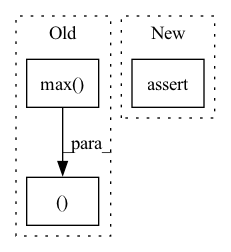

Pattern ID :20840
Before Change
signal_length = signal.shape[0]
time = np.linspace(0, signal_length, signal_length)
y_max, y_min = signal.max() + 0.1, signal.min() - 0.1
norm_w = (weights - weights.min(0)) / (weights.max(0) - weights.min(0))
leading = weights.argmax(-1)
w = (leading + norm_w.max(-1))[np.newaxis]
After Change
def impose(weights, signal, colormaps):
assert len(signal.shape) == 3
assert len(weights.shape) == 2
// create a figure
fig, ax = plt.subplots(1, 1, figsize=(10, 5))In pattern: SUPERPATTERN
Frequency: 3
Non-data size: 3
Instances Fragment ID: 67215472
Project Name: kolaszko/haptic_transformer
Commit Name: b78cf689b18ea6854d17e5ed972b867313e8c086
Time: 2021-12-02
Author: michalbednarek.e@gmail.com
File Name: utils/analysis.py
M Class Name: AnonimousClass
N Class Name: AnonimousClass
M Method Name: impose(3)
N Method Name: impose(2)
M Parent Class:
N Parent Class:
M File Name: utils/analysis.py
N File Name: utils/analysis.py
M Start Line: 28
M End Line: 49
N Start Line: 18
N End Line: 58
Before Change
ratio = estimated_sources_amplitude / estimated_sources_amplitude.sum(dim=0)
estimated_sources = ratio * mixture
norm = max(1, torch.abs(mixture).max() / 10)
mixture, estimated_sources = mixture / norm, estimated_sources / norm
estimated_sources = update_em(mixture, estimated_sources, iterations, eps=eps)
estimated_sources = norm * estimated_sources
return estimated_sourcesAfter Change
elif n_dims != 3:
raise ValueError("mixture.dim() is expected 3 or 4, but given {}.".format(mixture.dim()))
assert estimated_amplitude.dim() == 4, "estimated_amplitude.dim() is expected 4, but given {}.".format(estimated_amplitude.dim())
device = mixture.device
dtype = mixture.dtype Fragment ID: 67215469
Project Name: tky823/dnn-based_source_separation
Commit Name: 11a2e82888f76547df72eff58c6a592e3473e65c
Time: 2021-08-20
Author: 40362510+tky823@users.noreply.github.com
File Name: egs/musdb18/d3net/src/adhoc_driver.py
M Class Name: AnonimousClass
N Class Name: AnonimousClass
M Method Name: apply_multichannel_wiener_filter(4)
N Method Name: apply_multichannel_wiener_filter(5)
M Parent Class:
N Parent Class:
M File Name: egs/musdb18/d3net/src/adhoc_driver.py
N File Name: egs/musdb18/d3net/src/adhoc_driver.py
M Start Line: 383
M End Line: 401
N Start Line: 397
N End Line: 413
Before Change
class_indices = np.argwhere(segmentation_map == class_)
min_values = np.min(class_indices, axis=0) // x, y, z
max_values = np.max( class_indices, axis=0)
// Apply padding to bounding boxes
min_values -= padding
max_values += padding
assert min_values[0] < max_values[0]
assert min_values[1] < max_values[1]
assert min_values[2] < max_values[2]
bbox = {
"bbox": np.hstack((min_values, max_values )),
"label": class_
}
After Change
batch_bboxes = []
batch_classes = []
for map_ in segmentation_maps:
assert map_.ndim == 4
bboxes = []
classes = [int(class_) for class_ in map_.unique(sorted=True)][1:] Fragment ID: 67215471
Project Name: bwittmann/transoar
Commit Name: 1d0dfda78d476d74cfda6bde7ef5be249c33736a
Time: 2021-11-03
Author: wittmann_@gmx.de
File Name: transoar/utils/bboxes.py
M Class Name: AnonimousClass
N Class Name: AnonimousClass
M Method Name: segmentation2bbox(2)
N Method Name: segmentation2bbox(2)
M Parent Class:
N Parent Class:
M File Name: transoar/utils/bboxes.py
N File Name: transoar/utils/bboxes.py
M Start Line: 18
M End Line: 45
N Start Line: 8
N End Line: 34